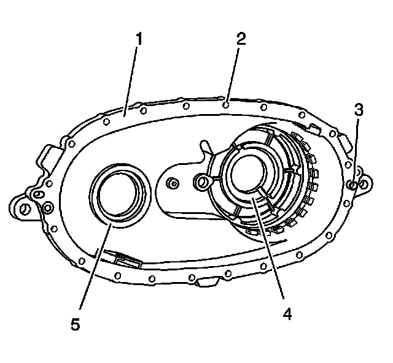
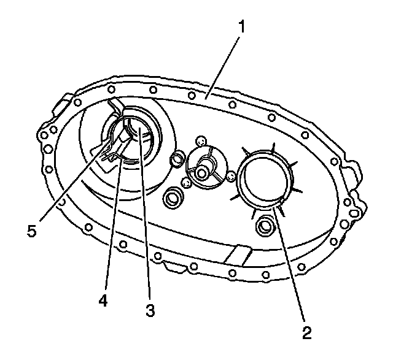
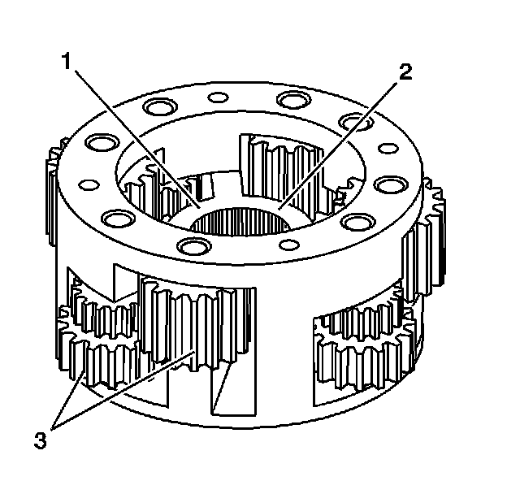
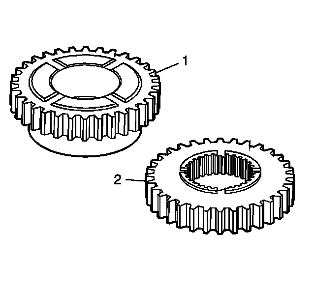
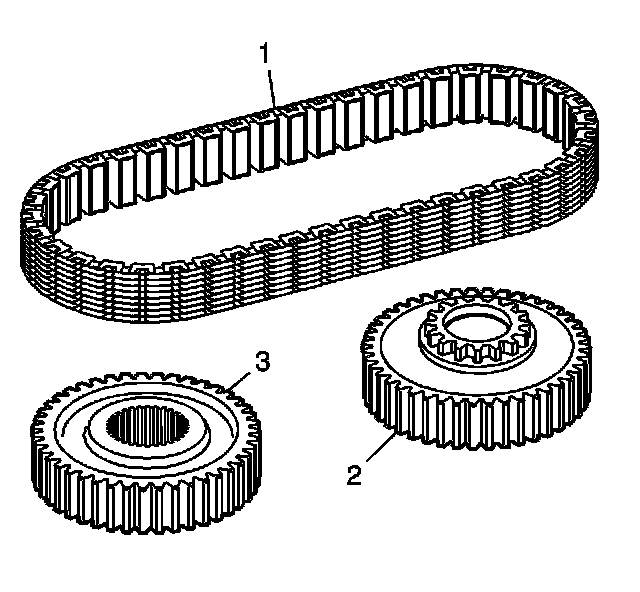
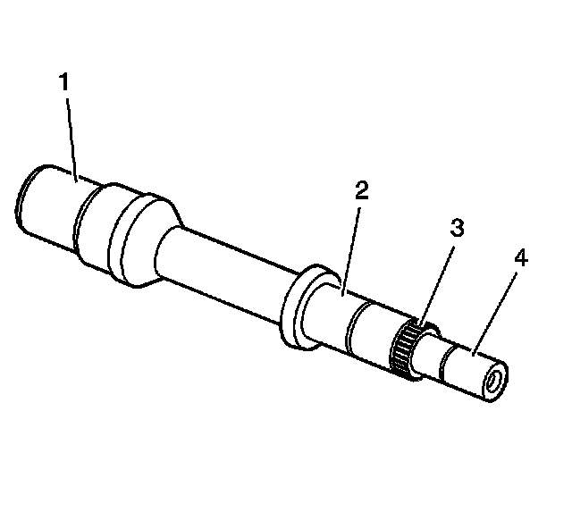
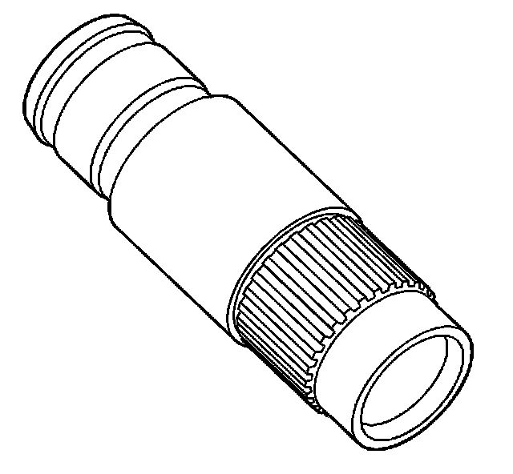
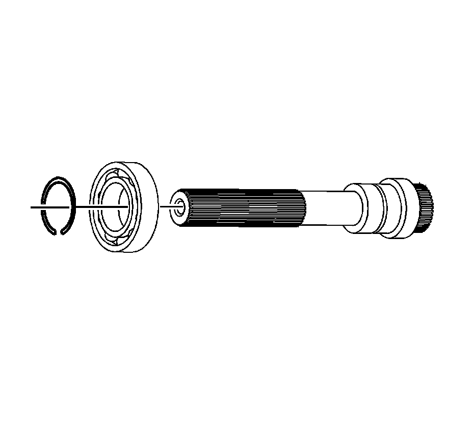

Cleaning and Inspection
Cleaning and Inspection
Front Case Half
Front Case Half:

1. Clean the front case half in cleaning solvent and air dry.
2. Remove the metal shavings from the case half bolt holes.
Notice: Refer to Machined Surface Damage Notice.
3. Remove the sealer from the case sealing surfaces.
4. Inspect the case for being broken or cracked.
5. Inspect the front output shaft front bearing bore (5) for the following conditions:
^ A spun bearing
^ Cracks
6. Inspect the input shaft bearing bore (4) for the following conditions:
^ A spun bearing
^ Cracks
7. Replace the front case half if any of the above conditions are found.
8. Inspect the sealing surfaces (1) for damage.
9. Repair small scratches or nicks with a soft stone.
10. Inspect the front case to transmission case mounting surface for damage.
11. Inspect the case threaded bolt holes (2) for damage.
12. Repair any damaged threads.
13. Inspect the transmission to transfer case studs for damage.
14. Replace any damaged studs. Refer to Transfer Case Disassemble and Transfer Case Assemble.
15. Inspect the location pins (3) for being loose or missing.
16. Repair or replace any damaged location pins.
17. Inspect the front output shaft front bearing and the input shaft bearing for the following conditions:
^ Roughness
^ Brinelling
^ Pitting
18. Replace the bearings if any of the above conditions are found. Refer to Transfer Case Disassemble and Transfer Case Assemble.
Rear Case Half
Rear Case Half:

1. Clean the rear case half in cleaning solvent and air dry.
Notice: Refer to Machined Surface Damage Notice.
2. Remove the sealer from the case sealing surfaces.
3. Inspect the case for being broken or cracked.
4. Replace the case if it is broken or cracked.
5. Inspect the sealing surfaces (1) for damage.
6. Repair small scratches or nicks with a soft stone.
7. Inspect the case threaded bolt holes for damage.
8. Repair any damaged threads.
9. Inspect the front output shaft rear bearing bore (2) for the following conditions:
^ Spun bearing
^ Cracks
10. Inspect the rear output shaft rear bearing bore (4) for the following conditions:
^ Spun bearing
^ Cracks
11. Replace the case if the bearing has spun. Refer to Transfer Case Disassemble and Transfer Case Assemble.
12. Inspect the retaining ring (5) for the rear output shaft rear bearing for being bent or twisted.
13. Replace a faulty retaining ring.
14. Inspect the rear output shaft bushing (3) for scoring or wear.
15. Replace the case if the rear output shaft bushing is faulty. Refer to Transfer Case Disassemble and Transfer Case Assemble.
16. Replace the case if the control actuator lever shaft bore is faulty. Refer to Transfer Case Disassemble and Transfer Case Assemble.
Differential Components
Differential Components:

1. Clean the planetary differential in cleaning solvent. Do not disassemble the planetary differential.
2. Air dry and ensure all cleaning solvent is removed from the bearings in the pinion gears (3). Do not spin the pinion gears with compressed air.
3. Inspect the pinion gears for chipped teeth.
4. Inspect the pinion gears for debris embedded in the root of the teeth.
5. Inspect the pinion gears for excessive side movement from worn bushings or shafts.
6. Inspect the planetary housing for cracks at the web (1) of the housing.
7. Inspect the thrust washer surface (2) for scoring or excessive wear.
8. Inspect the planetary housing for distortion.
9. Inspect the planetary housing to mainshaft splines for excessive wear.
10. Replace the planetary differential if any of the above conditions are found.
11. Inspect the planetary thrust washers for excessive wear or scoring.
12. Replace the thrust washers if they are faulty.

1. Clean the front sun gear (1) and the rear sun gear (2) in cleaning solvent and air dry.
2. Inspect the teeth on the front sun gear (1) and the rear sun gear (2) for the following conditions:
^ Chipped teeth
^ Excessively worn gear surfaces
Slight wear marks are normal.
^ Debris embedded in the root of the teeth
3. Inspect the thrust washer surfaces for excessive wear or scoring.
4. Replace the front sun gear (1) and the rear sun gear (2) if they are faulty.
Drive Chain and Sprockets
Drive Chain and Sprockets:

1. Clean the drive chain (1), drive sprocket (2), and driven sprocket (3) in cleaning solvent and air dry.
2. Inspect the drive chain (1) for the following conditions:
^ Loose link pins
^ Binding or stiff links
^ Debris embedded in the links
^ Worn teeth surfaces
3. Replace the chain if any of the above conditions are found.
4. Inspect the driven sprocket (3) and the drive sprocket (2) for the following conditions:
^ Chipped teeth
^ Excessively worn gear surfaces
Slight wear marks are normal.
^ Debris embedded in the root of the teeth
5. Inspect the drive sprocket bushing for the following conditions:
^ Excessive wear
^ Scoring
6. Replace the sprockets if any of the above conditions are found. The chain and sprockets may be replaced separately.
Input Shaft
Input Shaft:

1. Clean the input shaft in cleaning solvent.
2. Inspect the input seal surface (1) for excessive grooves or damage.
Important: Do not attempt to smooth any roughness in the bearing journals.
3. Inspect the bearing journals on the input shaft for the following conditions:
^ The drive gear bushing (2)
^ The rear support bushing (4)
- Scoring
- Pitting
- Brinelling
- Excessive wear
4. Inspect the input shaft planetary carrier assembly splines (3) for damage or excessive wear. Witness marks at the location of the gear is normal.
5. Replace the input shaft if any of the above conditions are found.
Front Output Shaft
Front Output Shaft:

1. Clean the front output shaft in cleaning solvent and air dry.
2. Inspect for spun bearings at the front output shaft bearing areas.
3. Inspect the front output internal splines and driven gear splines for damage or excessive wear.
4. Replace the front output shaft if it is damaged.
5. Inspect the cup plug in the front output shaft for leaking.
6. Replace the cup plug if it is leaking. Refer to Transfer Case Disassemble and Transfer Case Assemble.
Rear Output Shaft

1. Clean the rear output shaft with rear output shaft bearing in cleaning solvent.
2. Air dry and ensure all solvent is removed from the bearing.
3. Inspect the rear output shaft bearing for the following conditions:
^ Scoring
^ Pitting
^ Brinelling
^ Excessive wear
4. Replace the rear output shaft bearing if it is faulty. Refer to Transfer Case Disassemble and Transfer Case Assemble.
5. Inspect the mainshaft rear support bushing for the following conditions:
^ Pitted
^ Wear
^ Corrosion
6. Replace the mainshaft rear support bushing if any of the above conditions are found. Refer to Transfer Case Disassemble and Transfer Case Assemble.
7. Inspect the rear output shaft splines for wear or damage.
8. Inspect the rear output shaft bearing area for a spun bearing.
9. Replace the rear output shaft if any of the above conditions are found.